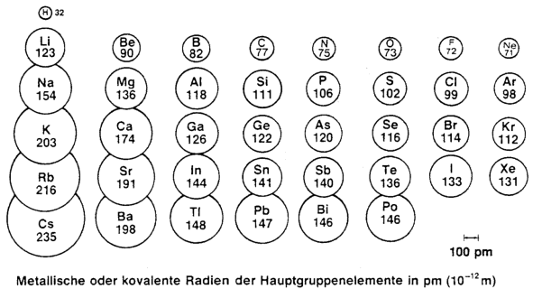
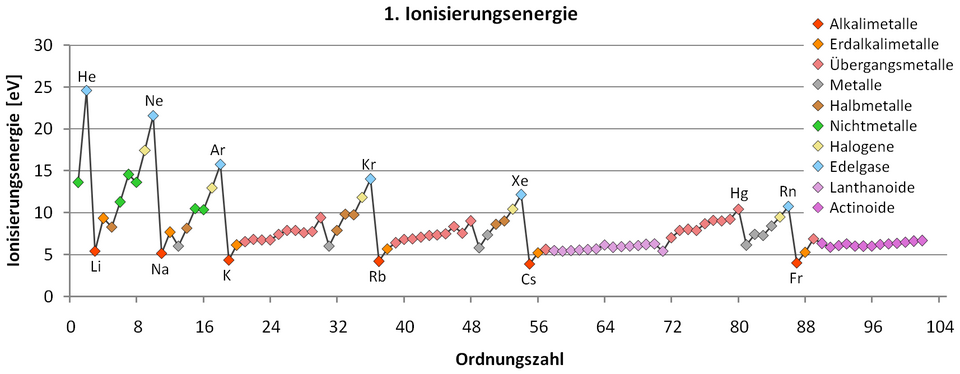
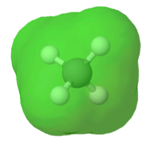
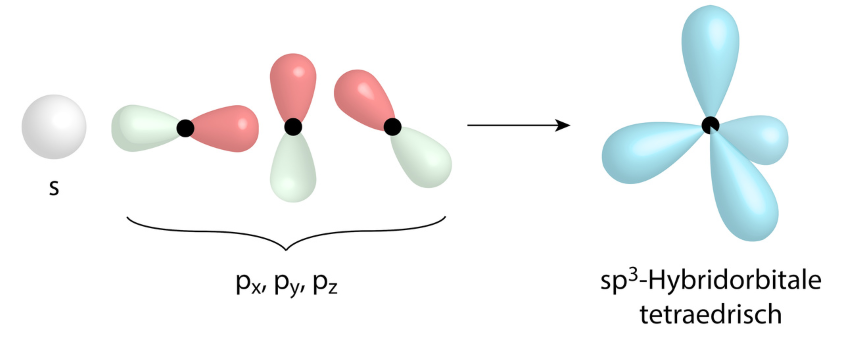

Vom Atom zur Chemie
Periodensystem, Trends und Valenzelektronen — die Brücke zur Chemie der Stoffe
Das Periodensystem der Elemente
Lernziele
- Sie können erklären, wie das Periodensystem aufgebaut ist und welche Bedeutung Perioden und Gruppen haben.
- Sie können den historischen Beitrag von Mendelejew und Meyer beschreiben und die Bedeutung der vorausgesagten Lücken einordnen.
- Sie können das PSE in s-, p-, d- und f-Block einteilen und diese Blöcke mit dem Orbitalmodell aus Phase 2 verknüpfen.
- Sie können die Begriffe Hauptgruppe, Nebengruppe sowie Metalle, Nichtmetalle und Halbmetalle korrekt verwenden.
- Sie können die wichtigsten Hauptgruppen (Alkalimetalle, Erdalkalimetalle, Halogene, Edelgase) charakterisieren.
8.1 Vom freien Atom zur geordneten Welt der Stoffe
In Phase 2 haben Sie gelernt, wie Elektronen in Orbitalen um den Kern angeordnet sind und wie Sie eine Elektronenkonfiguration aufschreiben. Doch warum braucht es das alles? Die Antwort lautet: Weil die Elektronenkonfiguration die chemischen Eigenschaften eines Elements bestimmt. Und diese Eigenschaften wiederholen sich periodisch — genau das macht das Periodensystem so kraftvoll.
In dieser Lektion lernen Sie, wie das PSE aufgebaut ist, wer es entdeckt hat — und wie eng es mit dem Orbitalmodell verwoben ist.
8.2 Vom Chaos zur Ordnung — ein historischer Streifzug
Anfang des 19. Jahrhunderts kannte man rund 30 Elemente, fünfzig Jahre später bereits 60. Die Frage drängte sich auf: Lässt sich diese wachsende Zahl irgendwie sinnvoll ordnen?
Erkennt «Triaden»: Gruppen aus drei Elementen mit ähnlichen chemischen Eigenschaften.
Dimitri Mendelejew
Unabhängig voneinander ordnen sie alle bekannten Elemente nach steigender Atommasse — und entdecken die «magische Zahl 8».
Geordnet nicht mehr nach Atommasse, sondern nach Protonenzahl (= Ordnungszahl). 118 bekannte Elemente.
Döbereiners Triaden (1829). Döbereiner fiel auf, dass es Dreiergruppen («Triaden») chemisch ähnlicher Elemente gibt — und dass die Atommasse des mittleren Elements ungefähr dem Mittelwert der äusseren beiden entspricht.
| Triade | Element | Atommasse (u) | Mittelwert von oben & unten |
|---|---|---|---|
| Halogene | Chlor (Cl) | 35,5 | — |
| Brom (Br) | 79,9 | (35,5 + 126,9) / 2 = 81,2 ✓ | |
| Iod (I) | 126,9 | — | |
| Alkalimetalle | Lithium (Li) | 6,9 | — |
| Natrium (Na) | 23,0 | (6,9 + 39,1) / 2 = 23,0 ✓ | |
| Kalium (K) | 39,1 | — |
Eine schöne Beobachtung — aber nur eine erste Ahnung von Ordnung. Triaden funktionierten nur für wenige Element-Gruppen, ein vollständiges System war noch nicht in Sicht.
Die «magische Zahl 8» (1869). Vierzig Jahre später wagten Meyer und Mendelejew einen radikaleren Schritt: Sie ordneten alle bekannten Elemente in einer einzigen Reihe nach steigender Atommasse — und beobachteten, dass nach jeweils acht Schritten wieder ein Element mit ähnlichen Eigenschaften wie das Ausgangselement auftauchte.
Konkret: Zählt man bei Lithium los und geht acht Plätze weiter, landet man bei Natrium — beides weiche, sehr reaktive Metalle. Acht weiter: Kalium, wieder dasselbe Verhaltensmuster. Geht man von Fluor acht Plätze weiter, kommt Chlor — beides giftige, reaktive Nichtmetalle.
Diese periodische Wiederkehr ähnlicher Eigenschaften war das Schlüsselargument: Wenn man die Elementreihe nach jedem achten Element umbricht und untereinander schreibt, stehen chemisch ähnliche Elemente plötzlich in derselben Spalte. Das ist die Geburtsstunde des Periodensystems — und der Grund, warum es «Periodensystem» heisst.
Mendelejews Geniestreich
Mendelejew hatte den Mut, in seiner Tabelle Lücken zu lassen — überall dort, wo die Periodizität ein Element verlangte, das man noch gar nicht kannte. Mehr noch: Aus der Position im Schema konnte er die Eigenschaften dieser unentdeckten Elemente vorhersagen.
Das berühmteste Beispiel ist das «Eka-Silicium», das wir heute Germanium nennen. Mendelejews Vorhersagen aus dem Jahr 1871 wurden 1886 von Clemens Winkler experimentell überprüft:
| Eigenschaft | Mendelejews Vorhersage (1871) | Tatsächlich gemessen (Germanium, 1886) |
|---|---|---|
| Atommasse | ≈ 72 | 72,6 |
| Dichte | 5,5 g/cm³ | 5,32 g/cm³ |
| Farbe | grau | grau-weiss |
| Oxidformel | EO₂ | GeO₂ |
Die Übereinstimmung war so verblüffend, dass die Wissenschaftswelt das PSE endgültig als gültiges Ordnungsprinzip akzeptierte. Mendelejew hatte mit seinem System nicht nur Bekanntes geordnet, sondern Unbekanntes vorhergesagt — der Goldstandard wissenschaftlicher Theorien.
Heute ist das PSE nach steigender Protonenzahl (Ordnungszahl Z) geordnet. Elemente mit ähnlichen Eigenschaften stehen untereinander in Spalten — den Gruppen.
8.3 Wie ist das PSE aufgebaut?
Eine waagrechte Zeile im PSE. Die Periodennummer entspricht der höchsten besetzten Hauptschale der Elemente in dieser Zeile.
Eine senkrechte Spalte im PSE. Elemente einer Gruppe haben ähnliche chemische Eigenschaften, weil ihre äusserste Schale auf die gleiche Weise mit Elektronen besetzt ist. Was das genau bedeutet, lernen Sie in L10.
Man unterscheidet 18 Gruppen. Die 8 Hauptgruppen (rote Beschriftung im PSE unten) tragen die Nummern I–VIII, dazwischen liegen die 10 Nebengruppen (Perioden 4–7, sogenannte Übergangsmetalle). Eine zusätzliche Unterteilung trennt das PSE in Metalle (links und Mitte), Nichtmetalle (rechts oben) und die schmale Diagonale der Halbmetalle dazwischen.
8.4 Die Brücke zum Orbitalmodell: Blockstruktur
Das PSE lässt sich auch nach den zuletzt besetzten Orbitalen einteilen. Diese Einteilung verbindet das PSE direkt mit dem Orbitalmodell aus Phase 2:
- s-Block (Gruppen 1 und 2): Die äussersten Elektronen besetzen ein s-Orbital. → Alkalimetalle und Erdalkalimetalle. Helium gehört trotz seiner Position rechts aussen ebenfalls zum s-Block (1s²).
- p-Block (Gruppen 13–18): Die äussersten Elektronen besetzen p-Orbitale. → Hauptgruppen III–VIII inklusive der Edelgase Ne, Ar, Kr, Xe und Rn.
- d-Block (Gruppen 3–12): Die äussersten Elektronen besetzen d-Orbitale. → Übergangsmetalle (Nebengruppen).
- f-Block (unten abgesetzt): f-Orbitale werden besetzt. → Lanthanoide und Actinoide.
Die Position eines Elements im PSE verrät direkt die Elektronenkonfiguration: Periodennummer = Hauptschale, Block-Position = Unterschale (s, p, d, f).
In der interaktiven Tabelle unten können Sie diese Blöcke einblenden und die wichtigsten Hauptgruppen anklicken, um mehr über sie zu erfahren.
💡 Tipp: Klicken Sie auf eine der vier wichtigsten Hauptgruppen (I, II, VII, VIII), um Detailinformationen zu sehen.
8.5 Quiz: Verstehen Sie das PSE?
Aufgaben zu Lektion 8
Trends im Periodensystem
Lernziele
- Sie können den Atomradius definieren und seine Trends innerhalb von Perioden und Gruppen beschreiben und erklären.
- Sie können den Begriff Ionisierungsenergie definieren und die Trends im PSE erklären.
- Sie können erklären, wie aus einem Atom durch Elektronen-Abgabe oder -Aufnahme ein Kation oder Anion entsteht.
- Sie kennen den Begriff Elektronegativität als Mass für die «Anziehungskraft» eines Atoms auf Bindungselektronen.
- Sie können die Trends Atomradius, Ionisierungsenergie und Elektronegativität in der Trend-Heatmap ablesen und interpretieren.
9.1 Warum gibt es Trends?
In L8 haben Sie gelernt, wie das Periodensystem aufgebaut ist. Doch das PSE ist mehr als ein Ordnungsschema: Innerhalb der Spalten und Zeilen verändern sich Eigenschaften wie Atomgrösse und die Festigkeit, mit der Elektronen ans Atom gebunden sind, in einer klar erkennbaren, vorhersagbaren Weise.
In dieser Lektion schauen wir uns drei wichtige Trends an: Atomradius, Ionisierungsenergie und (kurz) Elektronegativität. Alle drei lassen sich mit zwei einfachen Grundideen erklären: Wie viele Schalen hat ein Atom — und wie stark zieht der Kern an den äusseren Elektronen?
9.2 Der Atomradius
Da ein Atom keine scharfe Grenze hat (die Elektronenwolke wird nach aussen nur immer dünner), definiert man den Atomradius als halben Abstand zweier Atomkerne in einem Stoff aus identischen Atomen, die sich gerade berühren. Üblich ist die Angabe in Pikometer (1 pm = 10⁻¹² m).
Wenn wir uns die Atomradien aller Elemente anschauen, fallen zwei klare Trends auf:

Innerhalb einer Periode (von links nach rechts): Atomradius nimmt ab.
Innerhalb einer Gruppe (von oben nach unten): Atomradius nimmt zu.
Erklärung — innerhalb einer Periode: Beim Wandern von links nach rechts (z.B. von Li zu Ne) nimmt die Protonenzahl im Kern zu. Die zusätzlichen Elektronen werden aber alle in derselben Hauptschale untergebracht. Der stärker werdende Kern zieht diese Elektronen also fester zu sich heran — das Atom schrumpft.
Erklärung — innerhalb einer Gruppe: Beim Wandern von oben nach unten (z.B. von Li zu Cs) kommt jeweils eine ganze neue Hauptschale dazu. Die äusseren Elektronen sitzen also weiter weg vom Kern und werden zusätzlich von den darunterliegenden Schalen «abgeschirmt» — das Atom wächst.
9.3 Die Ionisierungsenergie
Stellen Sie sich vor, Sie wollen einem Atom ein Elektron «entreissen». Da der positiv geladene Kern und das negativ geladene Elektron einander anziehen, müssen Sie dafür Energie aufwenden. Genau diese Energie heisst Ionisierungsenergie.
Die Energie, die nötig ist, um einem freien, gasförmigen Atom ein Elektron vollständig zu entfernen. Üblicherweise wird die Energie pro Mol Atome angegeben, in kJ/mol.
Symbolische Schreibweise:
Na (g) + Energie ⟶ Na⁺ (g) + e⁻
Da das entfernte Elektron negativ geladen ist und im Atom zurückbleibt: ein einfach positiv geladenes Teilchen (das Atom hat ein Elektron weniger als Protonen). Solche geladenen Teilchen heissen Ionen — dazu gleich mehr.
Die Ionisierungsenergie folgt zwei klaren Trends — entgegengesetzt zum Atomradius:

Innerhalb einer Periode (von links nach rechts): IE nimmt zu.
Innerhalb einer Gruppe (von oben nach unten): IE nimmt ab.
Erklärung: Je näher ein Elektron am Kern sitzt (kleiner Atomradius!), desto fester wird es gehalten und desto mehr Energie braucht es, um es loszureissen. Daher: kleines Atom → hohe IE, grosses Atom → tiefe IE. Atomradius und IE sind also «zwei Seiten derselben Medaille».
9.4 Aus Atomen werden Ionen
Sobald ein Atom ein Elektron verliert oder ein Elektron aufnimmt, wird daraus ein elektrisch geladenes Teilchen — ein Ion.
Ein positiv geladenes Ion. Es entsteht, wenn ein Atom ein oder mehrere Elektronen abgibt. Beispiel: Na ⟶ Na⁺ + e⁻
Ein negativ geladenes Ion. Es entsteht, wenn ein Atom ein oder mehrere Elektronen aufnimmt. Beispiel: Cl + e⁻ ⟶ Cl⁻
9.5 Ionen-Schreibweise und Hauptgruppen
Welche Ionen ein Atom typischerweise bildet, hängt direkt von seiner Position im PSE ab. Atome aus den Hauptgruppen I und II geben gerne Elektronen ab und werden zu Kationen. Atome aus den Hauptgruppen VI und VII nehmen gerne Elektronen auf und werden zu Anionen. Edelgase bilden in der Regel gar keine Ionen — sie sind ja schon «zufrieden».
| Hauptgruppe | Beispiel-Atom | Wird zu … | Ion |
|---|---|---|---|
| I | Natrium (Na) | gibt 1 Elektron ab | Na⁺ |
| II | Magnesium (Mg) | gibt 2 Elektronen ab | Mg²⁺ |
| VI | Sauerstoff (O) | nimmt 2 Elektronen auf | O²⁻ |
| VII | Chlor (Cl) | nimmt 1 Elektron auf | Cl⁻ |
Atome bilden Ionen, deren Ladung der typischen «Tendenz» ihrer Hauptgruppe entspricht: links abgeben (positiv), rechts aufnehmen (negativ). Warum sie das tun, beantworten wir in L10 mit der Edelgasregel — und die Bindungen, die daraus entstehen, sind das Thema von Phase 4.
9.6 Die Elektronegativität — ein kurzer Ausblick
Ein Mass dafür, wie stark ein Atom in einer chemischen Bindung die gemeinsamen Bindungselektronen zu sich heranzieht. Die heute übliche Skala stammt von Linus Pauling und reicht von rund 0,7 (Cs) bis 4,0 (F).
Die Elektronegativität folgt im Wesentlichen denselben Trends wie die Ionisierungsenergie: Sie nimmt innerhalb einer Periode nach rechts hin zu und innerhalb einer Gruppe nach unten hin ab. Fluor ist mit EN = 4,0 das «elektronegativste» Element überhaupt.
9.7 Trends im interaktiven PSE
Im PSE unten können Sie die drei Trends als Heatmap einblenden. Dunklere Farbe steht jeweils für höhere Werte. Beobachten Sie, wie sich die Färbung von Periode zu Periode und von Gruppe zu Gruppe verändert.
9.8 Quiz: Verstehen Sie die Trends?
Aufgaben zu Lektion 9
Valenzelektronen und das Lewis-Symbol
Lernziele
- Sie können die Edelgasregel formulieren und erklären, warum Atome eine voll besetzte äusserste Schale «anstreben».
- Sie können den Begriff Valenzelektronen erklären und ihre Anzahl aus der Position eines Elements im PSE ablesen.
- Sie können das Konzept der sp³-Hybridisierung als Vereinfachung des Orbitalmodells beschreiben.
- Sie können für Hauptgruppen-Elemente das Lewis-Symbol korrekt zeichnen.
10.1 Warum eine neue, einfachere Darstellung?
In Phase 2 haben Sie das Orbitalmodell mit allen Details kennengelernt — s, p, d, f und die Pfeilschreibweise mit auf- und abwärts gerichteten Spins. Das ist sehr genau, aber für die Beschreibung von chemischen Bindungen zu detailliert. Wenn wir jedes Sauerstoff-Atom in einem Wassermolekül mit allen Orbitalen aufzeichnen würden, sähe das schnell unübersichtlich aus.
Wir brauchen ein Modell, das nur das Wesentliche zeigt: Wie viele Elektronen «interessieren» sich an chemischen Bindungen? Und wie könnten Atome sich zusammenfinden? Genau dafür gibt es das Lewis-Symbol — eine einfache, aber unglaublich nützliche Schreibweise.
10.2 Die Edelgasregel
In L8 haben Sie gesehen, dass die Edelgase (Hauptgruppe VIII) chemisch fast nichts tun — sie reagieren mit (fast) nichts. In L9 haben Sie gelernt, dass ihre Ionisierungsenergie besonders hoch ist und ihre Elektronegativität gering. Was ist das Geheimnis der Edelgase?
Atome streben einen Zustand an, in dem ihre äusserste Schale vollständig mit Elektronen besetzt ist — bei den meisten Atomen entspricht das 8 Elektronen (Oktett). Nur Wasserstoff und Helium sind «zufrieden» mit 2 Elektronen (Duett, also gefüllte K-Schale).
- Natrium gibt 1 Elektron ab → Na⁺ hat dieselbe Konfiguration wie Neon. ✓ Edelgas-Konfiguration erreicht.
- Chlor nimmt 1 Elektron auf → Cl⁻ hat dieselbe Konfiguration wie Argon. ✓ Edelgas-Konfiguration erreicht.
- Magnesium gibt 2 Elektronen ab → Mg²⁺ wie Neon. ✓
Die Edelgasregel ist die treibende Kraft hinter fast aller Chemie der Hauptgruppen. Aber um sie sauber anzuwenden, müssen wir wissen: Wie viele Aussenelektronen hat ein Atom überhaupt?
10.3 Valenzelektronen
Die Elektronen in der höchsten besetzten Hauptschale eines Atoms. Sie sind diejenigen Elektronen, die für chemische Bindungen «zur Verfügung» stehen.
Die gute Nachricht: Bei den Hauptgruppen-Elementen können Sie die Anzahl Valenzelektronen direkt aus der Hauptgruppen-Nummer ablesen. Hauptgruppe I → 1 Valenzelektron, Hauptgruppe IV → 4, Hauptgruppe VII → 7, und so weiter.
| Element | Konfiguration | Aussenschale | Hauptgruppe | Valenzelektronen |
|---|---|---|---|---|
| Li | 1s² 2s¹ | 2s¹ | I | 1 |
| Be | 1s² 2s² | 2s² | II | 2 |
| B | 1s² 2s² 2p¹ | 2s² 2p¹ | III | 3 |
| C | 1s² 2s² 2p² | 2s² 2p² | IV | 4 |
| N | 1s² 2s² 2p³ | 2s² 2p³ | V | 5 |
| O | 1s² 2s² 2p⁴ | 2s² 2p⁴ | VI | 6 |
| F | 1s² 2s² 2p⁵ | 2s² 2p⁵ | VII | 7 |
| Ne | 1s² 2s² 2p⁶ | 2s² 2p⁶ | VIII | 8 |
Diese einfache Regel «Valenzelektronen = Hauptgruppen-Nummer» gilt nur für die Hauptgruppen-Elemente. Bei den Nebengruppen (d-Block) ist es komplizierter — dort werden auch d-Elektronen für Bindungen genutzt.
10.4 Vom Orbital zum Lewis-Symbol — die sp³-Hybridisierung
Schauen wir auf die Aussenschale von Kohlenstoff: 2s² 2p². Das wären zwei verschiedene Sorten Orbitale — ein s-Orbital (kugelig) mit 2 Elektronen und zwei p-Orbitale (hantelförmig) mit je 1 Elektron. Methan liegt aber tetraedrisch vor. Deshalb können in dem gebundenen C-Atom ein s-Orbital und drei p-Orbitale nicht in ihrer ursprünglichen Form vorhanden sein, da so die tetraedrische Geometrie nicht möglich wäre. Die Hybridisierungstheorie erklärt dies mit einer Mischung der verschiedenen s- und p-Orbitale des zentralen Kohlenstoffatoms.

Stellen Sie sich also vor, Sie mischen ein s-Orbital mit drei p-Orbitalen. Das Resultat sind vier neue, völlig gleichwertige Orbitale, die wir sp³-Hybridorbitale nennen. Räumlich zeigen sie in vier Richtungen — in die Ecken eines Tetraeders, also möglichst weit voneinander weg.

Damit haben wir vier Orbitale, die alle gleich gut Elektronen aufnehmen können — und die räumlich in alle vier «Ecken» um den Kern zeigen. Diese vier Orbitale stellen wir uns vereinfacht als vier Plätze um das Atom vor: oben, rechts, unten, links.
Achtung: Die Hybridisierung ist ein Modell, kein physikalisches Ereignis. In Wirklichkeit «mischen» sich Orbitale erst dann auf diese Weise, wenn das Atom in einer Bindung steht. Wir nehmen die Vereinfachung trotzdem für isolierte Atome vor, weil sie das Zeichnen von Lewis-Symbolen sehr erleichtert — und für die Hauptgruppen-Chemie zuverlässig richtige Voraussagen macht.
10.5 Das Lewis-Symbol
Jetzt sind alle Zutaten beisammen. Das Lewis-Symbol ist ganz einfach aufgebaut:
Schreiben Sie das Elementsymbol. Drumherum — auf den vier «Plätzen» (oben, rechts, unten, links) — verteilen Sie so viele Punkte, wie das Atom Valenzelektronen hat. Verteilen Sie zuerst einzeln auf alle vier Plätze (1, 2, 3, 4 Punkte). Danach paaren Sie auf — zwei zusammengehörige Elektronen zeichnet man als Strich (5, 6, 7, 8 Elektronen).
Die Lewis-Symbole für die 2. Periode. Beachten Sie: Bis 4 Punkte → einzeln. Ab 5 → paaren, gepaarte Elektronen werden als Strich gezeichnet.
10.6 Lewis-Symbol-Builder
Trainieren Sie selbst! Wählen Sie ein Element aus, schauen Sie, wie viele Valenzelektronen es hat, und prüfen Sie das Lewis-Symbol Schritt für Schritt.
10.7 Quiz
Aufgaben zu Lektion 10
Was Sie aus Phase 3 mitnehmen
Periodensystem
Geordnet nach Protonenzahl. Periode = Hauptschalen-Anzahl. Gruppe = Spalte mit ähnlichen Eigenschaften. Hauptgruppen I–VIII, dazwischen Nebengruppen. Block-Struktur (s, p, d, f) verbindet das PSE mit dem Orbitalmodell.
Trends
Atomradius nimmt nach rechts ab (mehr Kernladung), nach unten zu (neue Schale). Ionisierungsenergie und Elektronegativität verhalten sich umgekehrt: rechts oben am höchsten.
Ionen
Atome werden durch Elektronenabgabe zu Kationen (positiv), durch Elektronenaufnahme zu Anionen (negativ). Die Ladung ergibt sich aus dem Streben nach Edelgaskonfiguration.
Edelgasregel
Atome streben eine voll besetzte äusserste Schale an: 8 Elektronen (Oktett), bei H und He 2 Elektronen (Duett). Diese Regel erklärt das chemische Verhalten der Hauptgruppen-Elemente.
Valenzelektronen
Elektronen in der höchsten besetzten Hauptschale. Anzahl = Hauptgruppen-Nummer. Sie bestimmen, wie ein Atom in chemischen Bindungen «sich verhält».
Lewis-Symbol
Elementsymbol mit Punkten ringsum. Grundlage: sp³-Hybridisierung liefert vier gleichwertige Plätze. Erst einzeln verteilen (1–4), dann paaren (5–8).
Phase 3 hat aus dem Atomaufbau eine chemische Logik gemacht: Aus der Position eines Hauptgruppen-Elements im PSE lassen sich seine wichtigsten Eigenschaften (Grösse, Reaktivität, Bindungstendenz) ableiten — und das alles aufgrund eines einzigen Prinzips, der Edelgasregel. In Phase 4 nutzen wir diese Logik, um die Bindungen zwischen Atomen zu verstehen.